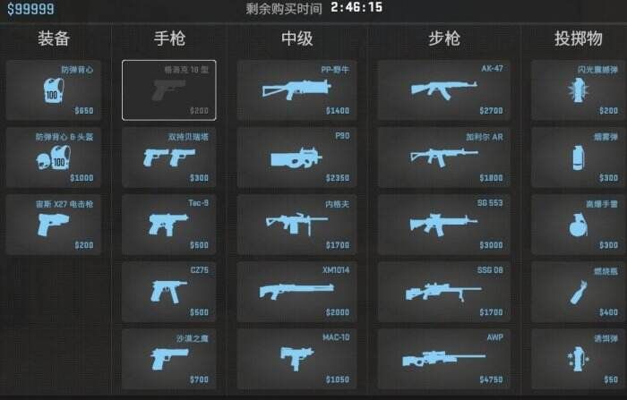

CS2游戏特色
主页 |
游戏特色 |
如何游玩
主要游戏特色

- 全新游戏引擎 - 使用Source 2引擎，画面更加逼真
- 升级的物理效果 - 烟雾弹效果更加真实，可以动态扩散
- 改进的音效系统 - 提供更准确的音频定位，帮助判断敌人位置
- 优化的匹配系统 - 根据玩家技能水平匹配对手，提供公平竞技环境
- 经典游戏模式 - 保留竞技模式、休闲模式和死亡竞赛等经典玩法
技术升级
CS2对游戏性能进行了全面优化，支持更高帧率和更低延迟，为竞技玩家提供更好的游戏体验。
作者：zack | 学校：法拉古特| 发布日期：2026 1 29